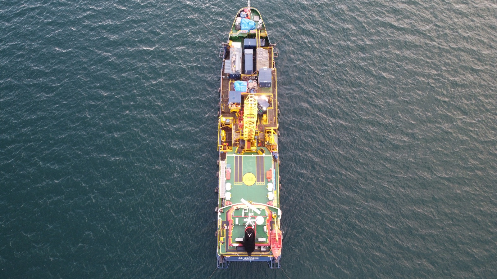

AG Geodrill
Geotechnical vessel for offshore soil investigation.
AG Geodrill is presented by THI as a dedicated offshore geotechnical vessel. Its configuration is centered on station keeping, heave compensated drilling, moonpool deployment, seabed frame handling, and onboard soil handling for survey campaigns.
Year2015
Engine Power1000 BHP
Accommodation40 Pax
GT711